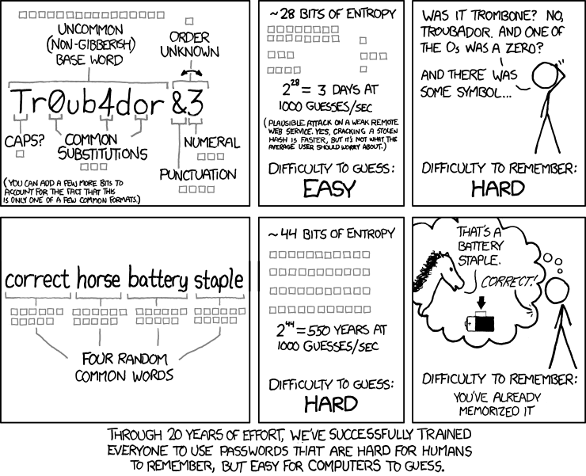

Passwords
How passwords get guessed, what an entropy model can tell us, and what infrastructure should do to protect users.
Authentication
- Something you know, something you are, something you have.
- Passwords are something you know; we refer to them as secrets. Other types of secrets: passphrases, PINs, secret questions.
- The goal in all authentication methods is good enough uniqueness.
- We can add behavior to assist in making risk assessments.
NIST SP 800-63B-4 uses the same three factors: something you know (a password or PIN), something you have (a cryptographic device or authenticator app), and something you are (a biometric, which NIST only permits in combination with something you have). Behavior (where a sign-in comes from, what device, at what time) is not an authentication factor on its own, but it feeds the risk decisions around authentication: whether to ask for another factor, block or alert.
correct horse battery staple

The comic’s point holds when the four words are chosen at random from a list of 2,048 words (11 bits each, 44 bits total). A person picking four words they like does not get 44 bits. The comic’s guess rate of 1,000 guesses per second is an online-attack figure from 2011, not a present-day offline benchmark; see the explorer below for current hardware.
Entropy
“My greatest concern was what to call it. I thought of calling it ‘information,’ but the word was overly used, so I decided to call it ‘uncertainty.’ When I discussed it with John von Neumann, he had a better idea. Von Neumann told me, ‘You should call it entropy, for two reasons. In the first place your uncertainty function has been used in statistical mechanics under that name, so it already has a name. In the second place, and more important, no one really knows what entropy really is, so in a debate you will always have the advantage.’”
— Claude Shannon, as recounted in M. Tribus and E. C. McIrvine, “Energy and Information,” Scientific American 225(3), 1971
The model
- Bits of entropy (aka shannons) = log2(search space)
- Search space = alphabet ^ length
So each character adds log2(alphabet) bits:
| Alphabet | Size | Bits per character |
|---|---|---|
| Digits | 10 | 3.32 |
| Lowercase letters | 26 | 4.70 |
| Lowercase + digits | 36 | 5.17 |
| Upper + lowercase | 52 | 5.70 |
| Upper + lowercase + digits | 62 | 5.95 |
| Printable ASCII | 95 | 6.57 |
| xkcd 936 word list | 2,048 | 11.00 |
| EFF large word list (five dice) | 7,776 | 12.92 |
Multiplicative versus exponential. Length is the exponent. Making the alphabet bigger multiplies the search space once per character; making the password longer multiplies the whole search space by the alphabet size again. Going from 26 to 95 characters adds under 2 bits per character. Going from 8 to 15 lowercase characters adds 33 bits.
The assumption that matters. The formula is only true when every character (or word) is chosen uniformly at random. Human-chosen passwords are not: Summer2026! uses a 95-character alphabet at length 11 and the formula says 72 bits, but it is a capitalized dictionary word, a year and a symbol: exactly the pattern a wordlist with rules tries first. Treat the calculator as an upper bound for random secrets, such as those a password manager generates.
Entropy calculator
Set the alphabet size and length. The chart shows bits of entropy by length up to 128 bits. The darker band shows the average case: on average an attacker finds a random secret after searching half the space, which is one bit less.
Assumes each character is chosen uniformly at random. Rates: hashcat 6.2.6 benchmark of one RTX 5090 (see below). Times are a full brute force; real attacks try likely passwords first.
Cracking = time x money
- Who is the threat?
- How is it protected?
An offline attacker who has the hashes guesses as fast as their hardware allows; nothing on your side slows them down except the hashing algorithm. So the two questions are: how much hardware can this attacker bring, and how expensive did we make each guess?
Money buys time, not guesses. Searching a given space takes a fixed number of GPU-hours. Ten times the GPUs finishes ten times sooner for the same energy bill. The cost below excludes the purchase price of the equipment, as an attacker who already owns it would see it.
Cracking time and cost explorer
Uses the alphabet and length from the calculator above. Each cell shows the average time to crack one hash and the cost of that effort. All dollar figures and GPU counts are editable assumptions, not measurements.
GPU rates are per RTX 5090 from the hashcat 6.2.6 benchmark below; multi-GPU scaling is assumed linear. Watts: NVIDIA's 575 W total graphics power for the RTX 5090, card only. $/kWh and $/GPU-hour are placeholders; enter your own. Tier GPU counts and purchase prices are illustrative: the $50k box is the outline's example, and the datacenter price scales it at the same $6,250 per GPU. Rows marked "derived" are scaled from the benchmark to OWASP's recommended work factors and are approximate.
Where the rates come from
All rates are hashcat 6.2.6 benchmark results for a single NVIDIA RTX 5090 Founders Edition, published by Chick3nman in February 2025: https://gist.github.com/Chick3nman/09bac0775e6393468c2925c1e1363d5c.
| Hash (hashcat mode) | Where you meet it | Guesses per second |
|---|---|---|
| NTLM (1000) | Windows NT hash, stored in AD and SAM | 340.1 G |
| MD5 (0) | Legacy applications | 220.6 G |
| SHA1 (100) | Legacy applications | 70.2 G |
| SHA2-256 (1400) | Unsalted or single-iteration application hashes | 28.4 G |
| NetNTLMv2 (5600) | A captured NTLMv2 challenge-response, not a stored hash | 16.0 G |
| Kerberos 5 TGS-REP etype 23 (13100) | Kerberoasting service tickets (RC4) | 4.18 G |
| PBKDF2-HMAC-SHA256, 999 iterations (10900) | Benchmark setting | 11.2 M |
| sha512crypt, 5,000 rounds (1800) | Linux /etc/shadow $6$ |
1.48 M |
| bcrypt, cost 5 (3200) | Benchmark setting (32 iterations) | 304.8 k |
| scrypt, N=16384 (8900) | Benchmark setting | 7.76 k |
Derived rates (approximate): bcrypt cost 10, OWASP’s minimum, is 25 = 32 times the work of cost 5: about 9.5 k/s. PBKDF2-HMAC-SHA256 at OWASP’s 600,000 iterations is about 600 times the work of 999 iterations: about 18.6 k/s.
A stored NT hash and an NTLM protocol exchange are different things. The NT hash is what sits in the domain database; an attacker gets it by stealing NTDS.dit, a backup, or replication rights. NetNTLMv2 is a challenge-response captured from the network or a coerced authentication. Both lead to the password, at very different speeds, and the NT hash can be used directly without cracking it (pass-the-hash). See Microsoft’s Passwords technical overview.
Protecting users
- Do what we can to protect users.
- Attack modeling should be based on online attacks.
- We have duties to protect hashes from getting stolen.
Online attacks are the ones we control. NIST SP 800-63B-4 §3.2.2 requires verifiers to limit consecutive failed attempts on an account to no more than 100. Against a throttled login, an attacker gets a handful of guesses per account, so the question is not “how many bits” but “is this password on the list of the first hundred things anyone tries.” That is why the blocklist matters more than the entropy figure. Spraying one common password across many accounts stays under per-account limits, which is another reason the blocklist and MFA matter.
Offline attacks happen after we failed to protect the hashes. Once hashes are stolen, only the hashing scheme stands between the attacker and the passwords. NIST §3.1.1.2 requires passwords be salted (at least 32 bits) and hashed with a suitable password hashing scheme, with the cost factor “as high as practical without negatively impacting verifier performance.” OWASP’s current minimums:
| Scheme | OWASP Password Storage Cheat Sheet minimum |
|---|---|
| Argon2id | 19 MiB memory, 2 iterations, parallelism 1 |
| scrypt | N = 217 (128 MiB), r = 8, p = 1 |
| bcrypt | Work factor 10 or more; legacy use; 72-byte input limit in most implementations |
| PBKDF2-HMAC-SHA256 | 600,000 iterations |
Windows does not give you that choice for domain accounts: the NT hash is unsalted and fast. Protecting it means protecting where it lives: domain controllers, their backups, and the accounts and rights that can replicate directory secrets.
Check a password against Pwned Passwords
Have I Been Pwned’s Pwned Passwords range API uses k-anonymity: you send the first five characters of the password’s SHA-1 hash and compare the returned suffixes locally. The password and the full hash never leave your machine.
function Test-PwnedPassword {
[CmdletBinding()]
param(
[Parameter(Mandatory)]
[securestring]$Password
)
$Plain = [System.Net.NetworkCredential]::new('', $Password).Password
$Bytes = [System.Text.Encoding]::UTF8.GetBytes($Plain)
$Hash = -join ([System.Security.Cryptography.SHA1]::Create().ComputeHash($Bytes) | ForEach-Object { $_.ToString('X2') })
$Prefix = $Hash.Substring(0, 5)
$Suffix = $Hash.Substring(5)
Write-Verbose "Sending only the prefix $Prefix"
$Match = (Invoke-RestMethod -Uri "https://api.pwnedpasswords.com/range/$Prefix") -split "`r?`n" |
Where-Object { $_.StartsWith("${Suffix}:") }
[pscustomobject]@{
Pwned = [bool]$Match
Count = if ($Match) { [int]($Match -split ':')[1] } else { 0 }
}
}
Test-PwnedPassword -Password (Read-Host -AsSecureString 'Password') -VerboseTested in PowerShell 7.6 on October 16, 2026: P@ssw0rd returned Pwned: True with a count of 6,421,042.
Takeaways
- Uniqueness means password managers.
- Check for compromised passwords; no complexity, no rotation.
- Use standards otherwise: NIST is 8 with MFA and 15 without MFA.
- Use MFA.
What NIST SP 800-63B-4 §3.1.1.2 actually requires of verifiers:
| Requirement | NIST SP 800-63B-4 |
|---|---|
| Minimum length | 15 characters when the password is a single-factor authenticator; 8 when used only as part of MFA |
| Maximum length | Support at least 64 characters |
| Blocklist | Compare new passwords against known commonly used, expected or compromised passwords |
| Composition rules | SHALL NOT impose other composition rules (no “one uppercase, one symbol”) |
| Rotation | SHALL NOT require periodic changes; SHALL force a change on evidence of compromise |
| Storage | Salted (≥ 32 bits) and hashed with a suitable password hashing scheme |
| Rate limiting | No more than 100 consecutive failed attempts per account (§3.2.2) |